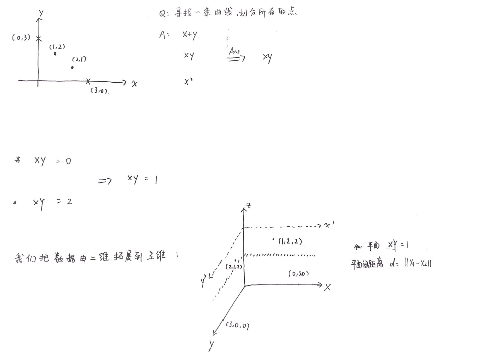
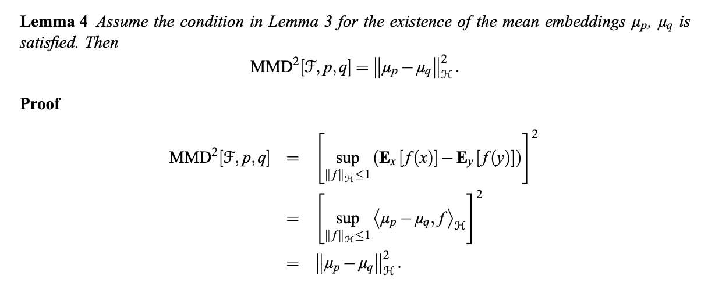
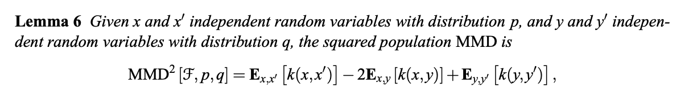
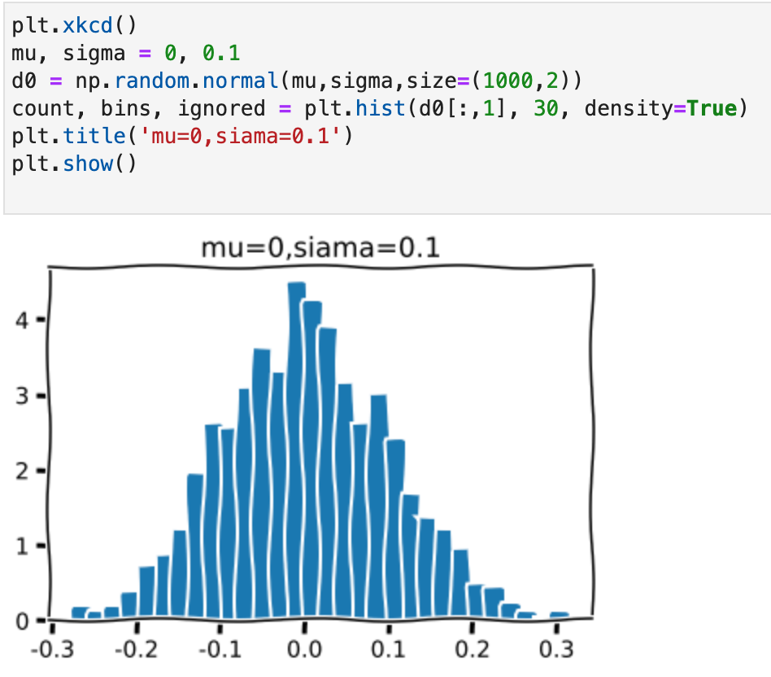
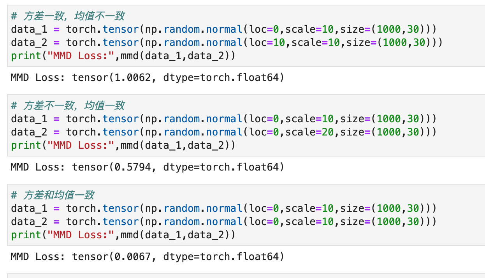

在论文 A kernel two-sample test 中 MMD 被首次提出，用于衡量两个样本是否来自于同一个分布，换而言之，分布 p 和分布 q 是否是同分布的。
基本思想
在日常的统计分析中，我们通过分布的概率密度函数 f(x) 去描述概率的分布，一些比较常见的分布如正态分布等，我们可以通过均值和方差就完成描述，但是更加复杂的分布则不行。
此时我们通过分布的中心矩来描述，比如一阶中心矩就是均值，二阶中心矩就是方差，三阶则是偏度，四阶则是峰度，还可以有更高的矩。此时，如果两个分布的矩很相似或者相同的话，我们就可以认为两个分布是一致的，就像我们判断两个人是不是亲兄弟，我们可以看长相身高，还可以去看瞳孔，甚至可以去比较 DNA 等等操作。
所以我们可以理解 MMD 的基本思想为：如果两个分布的任意阶都是相同的，那么这两个分布是一致的。而如果这两个分布不相同的话，那么我们就让使两个分布距离最大的那个矩用来作为度量两个分布的标准。
MMD 计算
MMD 的基本定义如下：
其中 F 就是我们的函数集，Sup 则是求上界的意思，经验估计结果如下：
其实光看上面的表述，我们还是一头雾水，我们来尝试理解一下;
现在我们要在函数集 F 中（相当于去遍历分布的高阶矩），找到让两个分布差异最大（距离最大）的 f ，计算出 MMD 值，根据这个值去评价两个分布的差异。
所以这里有两个要点需要我们注意
- F 要足够多，这样才能寻找足够的高阶矩
- 分布的距离是可以度量的
此时，我们的 RKHS （再生核希尔伯特空间）闪亮登场，论文中证明了如果 F 是 universal RKHS 的 unit ball ，则可以比较好的满足以上两个性质。
核函数
提到 RKHS，其实这就和核函数有关了，因为我们可以简单理解为：我们使用核函数把数据映射到一个高维空间，这个空间就是再生核希尔伯特空间。
这里我们简单理解下核函数：

简而言之：通过核函数，我们分布的相似程度可以通过距离来度量。
MMD 的计算
论文中也给出了我们如何进行化简计算：


这里的 k(x,x’) 即是我们的核函数。
常见核函数
主要有以下几种：
线性核，就是没有映射
高斯核函数，使用最为广泛，可以把原始特征映射到无穷维
多项式核函数
具体实现
通过 np.random.normal( ) 函数生成正态分布的数据

测试结果：
